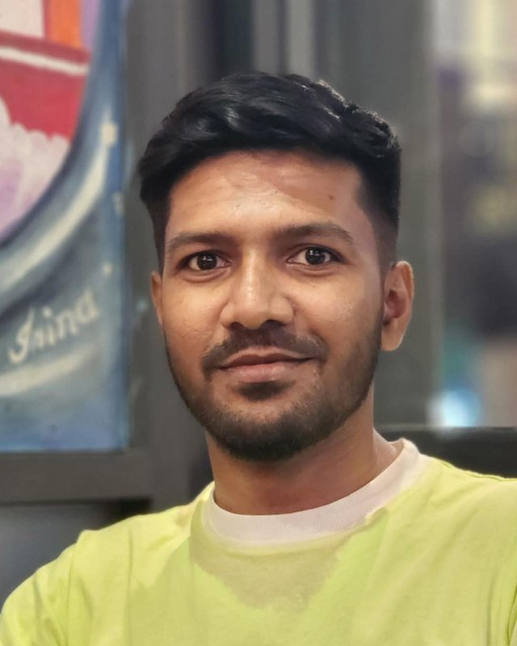
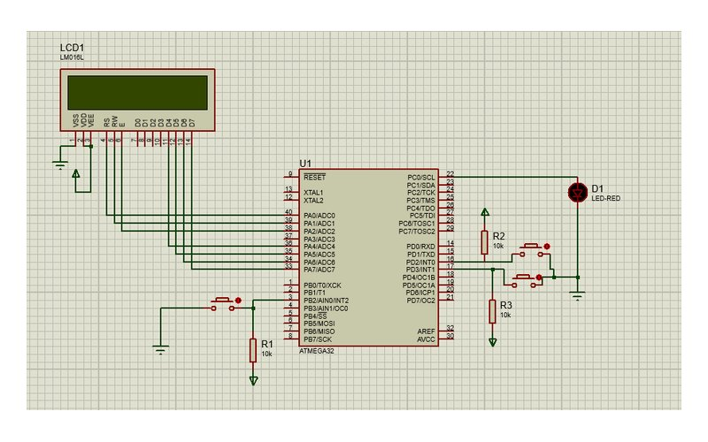
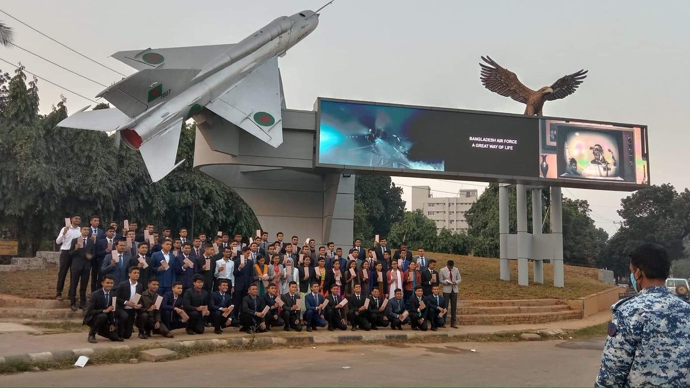
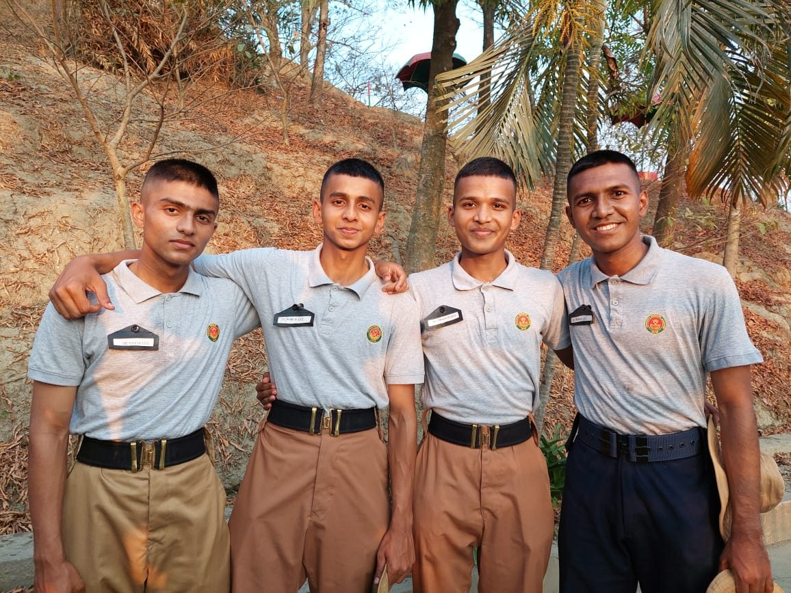
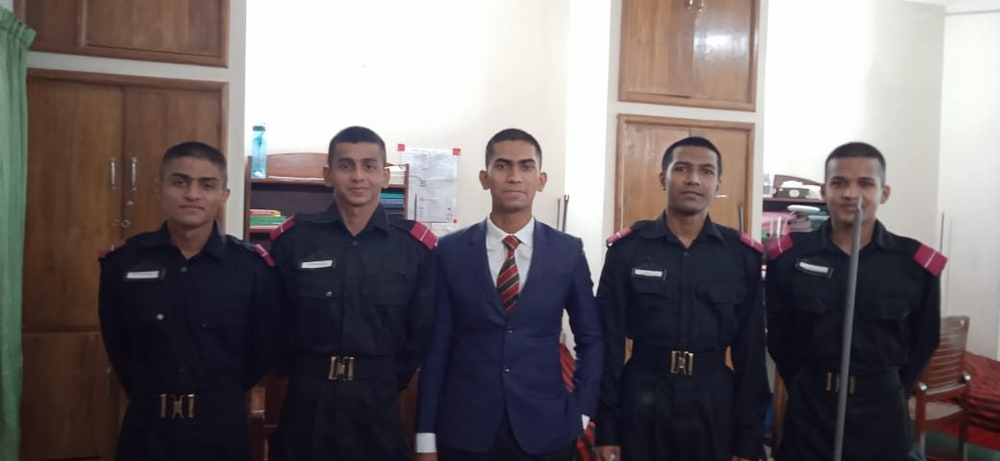

Master of Engineering (MEng), Electrical and Computer Engineering
Schulich School of Engineering, University of Calgary, Canada
In progress
Engineering intelligent solutions for a sustainable future.
Electrical & Computer Engineering Power Systems Embedded Systems Intelligent Energy Solutions
I'm a Master of Engineering student at the University of Calgary with a BSc in Electrical and Electronic Engineering. I build systems that measure real electrical signals, from sensor hardware and microcontrollers to the machine-learning models that interpret the data, with a focus on energy monitoring and power systems.
Location: Calgary, Alberta, Canada

An electrical engineer who likes to see a system work end to end, from the circuit to the data.
My foundation is a BSc in Electrical and Electronic Engineering from BRAC University in Dhaka, where I specialized in electronics. My coursework and projects ranged from overhead transmission-line measurements and electrical service design to Verilog-to-layout chip design and embedded firmware.
Much of my work is practical implementation. For my final-year design project, which I led, our team built voltage and current sensing hardware around an Arduino Mega and ESP8266, collected more than 180,000 samples from identical induction motors, and adapted a deep-learning model to estimate each motor's power from a single measurement point. That project became my first research preprint on arXiv.
I enjoy the space where hardware meets software: sensors, microcontrollers and communication links on one side, and Python, MATLAB and machine-learning models on the other. I'm now completing a Master of Engineering in Electrical and Computer Engineering at the University of Calgary, where my interest is in intelligent energy technologies: energy monitoring, power systems and data-driven tools for a more efficient grid.
Two engineering degrees, built on a science-focused school and college education in Bangladesh.
Schulich School of Engineering, University of Calgary, Canada
BSRM School of Engineering, BRAC University, Dhaka, Bangladesh
BAF Shaheen College Kurmitola, Dhaka, Bangladesh
Homna Government High School, Homna, Cumilla, Bangladesh
Recognized for academic excellence in one semester of the BSc program.
Awarded by the Board of Intermediate and Secondary Education for ranking among the top merit holders in the Secondary School Certificate examination.
Recognized at the national merit tier for outstanding results in the Class 8 national examination.
Talent Pool distinction in the Class 5 national primary examination.
Tools and methods I've used in coursework, projects and research.
Measurement, analysis and design of electrical systems.
Sensor interfacing, data acquisition and connected devices.
Protocols and wireless links used in my hardware projects.
Learning from measured and time-series data.
Languages and simulators for modelling and verification.
Schematics, PCBs, chip layout and electrical drawings.
Hardware builds, simulations and data projects, most recent first. Each one has a detailed page with methods, figures and results.

Voltage and current sensing hardware plus a fine-tuned MATNILM deep-learning model that estimates the power of individual induction motors from one measurement point. Real-time results: F1 score 0.82, MAE 13.43 W.

24 years of meteorological data used to assess wind energy potential. The MLP model achieved 12.4% lower MSE than linear regression.

A microcontroller voting system simulated in Proteus, with interrupt, push-button and keypad input designs compared.

Numerical differentiation, transfer-function and state-space models, and RK4 integration of RC circuits in MATLAB/Simulink.

A 24-hour alarm clock in Verilog HDL, verified by testbench, synthesized with two libraries and laid out with zero DRC violations.

AutoCAD electrical layouts for four classrooms. The selected design cut planned lighting consumption by 50%.

A modular educational satellite with solar-charged power, onboard computer, LoRa telemetry and 5.8 GHz video.

Lab measurements of two line models in parallel across five load steps, with and without capacitors and with one line disconnected.
Research that grew out of my final-year design project on industrial energy monitoring.
Preprint · arXiv:2601.01616 · 2026
Non-intrusive load monitoring (NILM), industrial energy monitoring, machine learning and signal processing (arXiv: cs.LG, eess.SP).
Textile factories in Bangladesh use a lot of energy but rarely monitor it machine by machine. This work proposes a real-time NILM framework for identical motor-driven cutting machines. We built a new dataset of 180,631 samples from three identical 50 W induction motors and an auxiliary lighting load, and evaluated the MATNILM deep-learning model on it. The system tracked total energy reasonably well, but separating machines that run at the same time remained hard, which points to higher sampling rates, larger datasets and hybrid methods as next steps.
Leading engineering teams on academic projects, and leadership training as an officer cadet.
Jul 2024 – May 2025
Academic project leadership
BRAC University, Dhaka, Bangladesh
Sep 2023 – Dec 2023
Academic project leadership
BRAC University, Dhaka, Bangladesh
Jan 2022 – Jul 2022
Leadership training
Bangladesh Air Force Academy, BAF Base Matiur Rahman, Jashore, Bangladesh
This was officer cadet training, not commissioned military service.




Photos from officer cadet training, 2022.
Community work and the things I enjoy outside the lab.
I help connect patients who need blood with donors through the forum's member network. I support the coordination of about ten blood requests a month on average, and keep in touch with three blood bank contacts in Dhaka to locate donors and respond to patient requests.
I enjoy playing sports. They keep me active and give me a break from screens and circuits.
I love travelling and seeing new places.
I love watching movies in my free time.
I'm open to conversations about internships, research and engineering opportunities. Email is the best way to reach me.